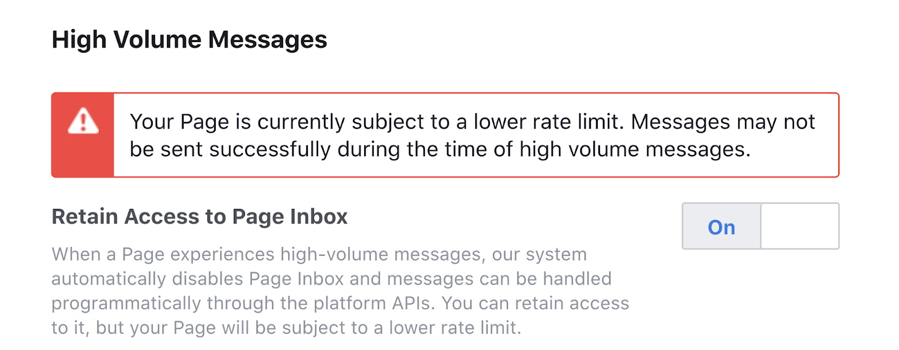

Tổng hợp câu hỏi
Đây là nơi tổng hợp những vấn đề và cách khắc phục mà bạn dễ gặp nhất khi dùng AhaChat. Có một số lỗi là do bạn cài đặt sai hoặc hiểu sai, và cũng có một số lỗi là do bạn vi phạm chính sách nền tảng Messenger của FB.
1. Bot không hoạt động? Gửi Broadcast không hoạt động?
Có rất nhiều nguyên nhân khiến bot không hoạt động, gồm:
- Bạn đã tắt bot tại menu Cài đặt hoặc ngoài Danh sách bot.
- Bạn không phải là admin của fanpage tích hợp bot.
- Bạn vừa đổi mật khẩu facebook. Bạn bị facebook checkpoint.
- Bạn chưa Đăng trang trong Cài đặt fanpage.
- Bạn đang chặn tin nhắn từ khách hàng.
- Bạn lỡ tay cài đặt app AhaChat thành Secondary Receiver.
- Bạn đang bật "Gửi tin trả lời nhanh cho bất kỳ ai nhắn tin cho Trang".
- Bạn đã sử dụng hết api do FB cấp trong vòng 24 giờ.
- Bạn bị FB chặn tính năng gửi tin nhắn hoặc chưa Làm mới quyền (mã #2022).
Thông thường trong tất cả các trường chỉ cần Làm mới quyền thì bot sẽ hoạt động trở lại.
Nếu vẫn không được thì vui lòng tham khảo cách giải quyết tại đây.
2. Auto inbox không hoạt động?
Có rất nhiều nguyên nhân khiến bot không hoạt động, gồm:
- Bạn đã dùng hết 1 000 tin nhắn FREE.
- Chưa bật Auto Inbox trong menu Tăng trưởng.
- Dán link hoặc ID bài post video (nên chọn bài post hơn là dán link hoặc dùng ID).
- Bình luận với tư cách fanpage.
- Khách hàng chặn tin nhắn từ page hoặc dưới 18 tuổi.
- Bạn chưa cấp quyền Auto Inbox cho AhaChat.
Vui lòng tham khảo thêm cách giải quyết tại đây.
3. Tính năng quét khách hàng từ khi lập page là gì?
Đây là tính năng cực kỳ hữu ích giúp cho chủ page không bị mất khách hàng khi tích hợp bot. Nghĩa là nếu như page của bạn có khoảng 20,000 khách hàng từng inbox từ 1 năm trước đây thì sau khi tích hợp, AhaChat sẽ chuyển dữ liệu 20 ,000 khách hàng này thành đăng ký bot. Từ đó bạn có thể gửi Broadcast, Chăm sóc để xây dựng mối quan hệ tốt với khách hàng của mình. Đây cũng là tính năng mà AhaChat tự hào nhất vì cung cấp đầu tiên cho thị trường và hoạt động rất ổn định.
4. Vì sao các nút bấm bị vô hiệu hóa khi chat?
Nếu bạn vào inbox page và nhìn thấy thông báo bị vô hiệu hóa như thế này thì đừng lo lắng. Vì đây là quy định của facebook, còn trong inbox của cá nhân vẫn có thể nhấn vào bình thường.
5. Có thể hẹn giờ cho bot hoạt động được không?
Hoàn toàn được, bạn có thể cài đặt bot chỉ hoạt động vào lúc nhân viên không trực page hoặc kết hợp giữa bot và nhân viên để đem lại hiệu suất công việc tốt hơn.
Cách cài đặt bạn có thể tham khảo tại đây.
6. Không nhìn thấy fanpage để tích hợp bot?
Dù bạn đang là quản trị của nhiều Fanpage (phải là quản trị viên nhé), vậy mà khi kết nối vào AhaChat lại chẳng thấy Fanpage nào để kết nối. Thì nguyên nhân là do bạn chưa cấp quyền cho ứng dụng “AhaChat” truy cập vào tất cả Fanpage của bạn. Cách giải quyết như sau:
Bước 1: Truy cập https://www.facebook.com/settings?tab=business_tools và tìm app có tên “AhaChat” (nếu không thấy app bạn hãy thử truy cập https://www.facebook.com/settings?tab=applications&ref=settings) và xóa app (bạn sẽ không bị mất bot nên hãy yên tâm):
Bước 2: Truy cập https://ahachat.com và Đăng nhập lại!
7. Lưu dữ liệu từ chatbot vào google sheet?
Vui lòng tham khảo hướng dẫn chi tiết tại đây.
8. Lấy dữ liệu từ google sheet ra chatbot?
Vui lòng tham khảo hướng dẫn chi tiết tại đây.
9. Sự khác nhau giữa tài khoản FREE và PRO?
FREE và PRO đều không giới hạn tính năng và khách hàng. Tuy nhiên ở phiên bản FREE, bạn chỉ gửi được tối đa 1,000 tin nhắn từ Broadcast, Chăm sóc và Auto inbox. Trong khi ở phiên bản PRO, bạn có thể gửi tối đa lên đến 100,000 tin nhắn tương ứng đó. Nếu bạn đã từng dùng các công cụ bot trước đây thì có thể dễ dàng quy đổi 100,000 tin nhắn tương đương với 25,000 subscribers đang hoạt động (nghĩa là vẫn chat với page).
Bạn có thể tham khảo thêm sự so sánh giữa FREE và PRO và so sánh giữa AhaChat với các Chatbot khác.
10. Làm sao để chuyển khách hàng từ manychat/chatfuel về AhaChat?
Bạn chỉ cần xóa chatfuel/manychat ra khỏi tài khoản cá nhân đang làm quản trị bot. Sau đó tích hợp vào AhaChat thì tất cả các khách hàng từ bot cũ sẽ chuyển sang AhaChat hoàn toàn tự động. Thời gian chuyển phụ thuộc vào số lượng khách hàng, thời gian thông thường sẽ là 2h kể từ khi tích hợp bot.
11. Có thể gửi tin nhắn đến toàn bộ khách hàng từng inbox page?
Được, nhưng chúng tôi không khuyến khích điều đó, sau quá trình chuyển tự động khách hàng chat với page thành đăng ký bot trên AhaChat. Bạn nên tạo các chiến dịch Broadcast và Chăm sóc gửi đến đúng đối tượng để đạt hiệu quả quảng cáo tốt hơn. Tránh lạm dụng bot để SPAM vì nguy cơ cao là Facebook sẽ chặn tính năng gửi tin nhắn từ page của bạn.
12. Cách gửi tin nhắn đến những người đã like page hoặc comment page?
Trước đây thì được nhưng giờ thì tuyệt đối không được. Đây là chính sách mới của Facebook để chống SPAM.
13. Làm sao để tránh fanpage bị khóa hoặc chặn tin nhắn?
Nếu bạn dùng bot đúng cách thì sẽ không bao giờ bị chặn vì chính Facebook cũng khuyến khích các doanh nghiệp dùng bot để phục vụ mục đích kinh doanh. Đúng cách nghĩa là bạn gửi đúng thông tin đến đúng đối tượng khách hàng. Còn sai cách nghĩa là bạn gửi thông tin đến hàng loạt khách hàng. Ví dụ thay vì gửi lời chúng 8/3 kèm quà tặng đến khách hàng Nữ thì bạn lại gửi đến cả khách hàng Nữ và Nam. Khiến nhiều bạn Nam bị làm phiền và họ chặn tin nhắn page, từ đó FB xác định là bạn đang SPAM và sẽ cảnh báo hoặc nặng hơn là chặn tính năng gửi tin nhắn của page.
Ở AhaChat, tất cả những nguyên nhân khiến page bị chặn đều tập trung vào 2 tính năng là Gửi broadcast và Chăm sóc. Vì vậy bạn nên đọc kỹ hướng dẫn này để tránh trường hợp ngoài ý muốn.
14. Tự động bật cửa số chat khi vào fanpage?
Tự động bật cửa số chat/messenger khi vào fanpage sẽ giúp page của bạn tăng tương tác rất nhanh. Từ đó giúp nâng cao cơ hội bán hàng của shop. Vì vậy, bạn nên tham khảo bài viết này để biết cách tự động bật cửa sổ đó cho khách hàng nhé.
15. Cách tắt hoặc mở chế độ chat với khách?
Chế độ chat với Khách (hay còn gọi là Guest Mode) nghĩa là khách không cần đăng nhập vào FB vẫn có thể chat được với Page của bạn. Mỗi phiên chat sẽ kéo dài 24h tính từ lúc khách hàng chat tin nhắn đầu tiên với Page. Sau 24h nếu cùng khách hàng đó chat lại thì nội dung cũ sẽ bị xóa phía khách hàng. Vì vậy, nếu bạn muốn biết cách bật/tắt chế độ này tùy theo mục đích kinh doanh thì vui lòng tham khảo hướng dẫn này.
16. Cách upload video/audio vào tin nhắn bot?
Chèn video vào chatbot rất hiệu quả đối với các sản phẩm, dịch vụ khách hàng cần xem ngay. Bạn không phải điều hướng họ ra web, hay youtube nữa gây gián đoạn quá trình mua hàng. Vì vậy, bạn nên tham khảo bài viết này để biết cách sử dụng video vào bot nhé.
17. Cách giải cứu hoàn đơn bằng AhaChat?
Hãy tưởng tượng bạn có 1 chương trình khuyến mãi, khách hàng của bạn đăng ký và được lưu vào google sheet. Tuy nhiên vì 1 lý do nào đó mà đến lúc giao hàng khách lại không nhận nữa. Thì bạn có thể lọc ra những khách hoàn đơn kèm lý do và sau đó tạo 1 chiến dịch Broadcast để gửi đến những khách hoàn đơn này. Và bạn có thể tham khảo cách làm chi tiết tại đây.
18. Cách xử lý nếu bị vô hiệu hóa inbox fanpage:
Khi một Trang được chuyển thành trạng thái có MPS cao, thì công cụ Hộp thư trên Trang sẽ bị vô hiệu hóa. Quản trị viên Trang có thể chọn tiếp tục sử dụng công cụ này bằng cách kích hoạt tùy chọn cài đặt Giữ lại quyền truy cập vào Hộp thư trên Trang cho Trang.
Bước 1. Vào Cài đặt > Nền tảng Messenger
Bước 2: Di chuyển đến Retain Access to Page Inbox sẽ thấy bị OFF
Bước 3: Bật nút Retain Access to Page Inbox thành ON

Vậy là xong, tuy nhiên lúc này số lượng tin nhắn FB cấp cho bạn sẽ bị giảm xuống, nếu chưa vi phạm sẽ là 250 api/giây, còn sau khi vi phạm sẽ nhỏ hơn 100 api/giây.
19. Các mã lỗi thường gặp khi sử dụng Chatbot?
Khi sử dụng bot có một số trường hợp xảy ra ngoài ý muốn khiến bot không hoạt động. Và chúng tôi đã phát triển công cụ bắt lỗi để giúp chủ bot có thể tự mình điều tra được nguyên nhân. Mỗi mã lỗi là một con số đại diện cho một vấn đề mà bạn có thể tra ở dưới.
| STT | Mã lỗi | Nguyên nhân | Hướng xử lý |
|---|---|---|---|
| 1 | (#551) Người này hiện không có mặt. | - Khách hàng của bạn chặn tin nhắn của page trên Facebook. - Khách hàng chặn trang của bạn trên Facebook. | Điều hướng khách hàng bỏ chặn page, bỏ chặn tin nhắn page của bạn trên Facebook. |
| 2 | Trả về ĐÚNG nếu một đối tượng nào đó đúng | - Bạn chưa bấm Làm mới quyền khi gửi Broadcast hoặc Chăm sóc. - Page bạn bị chặn tính năng gửi tin nhắn. | Vào menu Cài đặt > Làm mới quyền. Nếu vẫn không được thì kiểm tra xem có nhận thông báo bị chặn tính năng gửi tin nhắn hay không để kháng. |
| 3 | (#10903) This user cant reply to this activity. | - Khách hàng đã chặn page của bạn trên Facebook nên bạn không thể gửi tin nhắn qua luồng comment - Không nhắn tin được do bình luận đã quá 7 ngày - phía Facebook không cho phép nhắn tin lại | Điều hướng khách hàng bỏ chặn page của bạn trên Facebook. |
| 4 | (#1705) There was an error posting to this wall - undefined. | - Khách hàng đã chặn page của bạn trên Facebook nên bạn không thể gửi bình luận. | Điều hướng khách hàng bỏ chặn page của bạn trên Facebook. |
| 5 | (#10900) Activity already replied to). | - Khách hàng chưa từng nhắn tin đến page của bạn và bình luận này đã được nhắn tin phản hồi qua bình luận trên Facebook nên khi sử dụng chức năng nhắn tin qua bình luận trên kênh Facebook sẽ không gửi được tin nhắn. | Điều hướng qua comment để khách hàng tương tác trực tiếp với page, khi đó page có thể trả lời lại tin nhắn. |
| 6 | (#200) Permissions error. | - Bot đã bị dừng nên không trả lời được, nguyên nhân bot dừng có thể do bạn đã đổi mật khẩu hoặc lâu rồi ko login vào bot hoặc có những hoạt động bất thường (checkpoint). | Vào Cài đặt > Bấm Làm mới quyền để bot hoạt động trở lại. |
| 7 | (#230) Requires pages_messaging permission to manage the object - null. | - Bạn bỏ quyền quản lý và truy cập cuộc trò chuyện trên Trang trong messenger nên bạn không gửi được tin nhắn đến khách hàng. | Bạn Đăng xuất khỏi kênh Facebook → Kết nối với Facebook (kết nối/đăng nhập lại) → ở màn hình hiện ra bạn chọn Chỉnh sửa cài đặt → chọn page cần chỉnh sửa quyền → và cấp đủ quyền sử dụng đối với page của bạn. |
| 8 | Mất avatar, tên Facebook của khách hàng. | - Access Token bị hết hạn. | Thực hiện đăng nhập lại, sau khi đăng nhập lại, tương tác lần tiếp theo với khách hàng (khách hàng gửi tin đến, bạn gửi tin đi) sẽ cập nhật tên và avatar của khách hàng. |
| 9 | (#100) The URL provided is not whitelisted for messenger extension. | - Không gửi được sản phẩm qua tin nhắn vì trong cài đặt nhắn tin nâng cao của page chưa thêm tên miền được quyền truy cập trong chế độ xem web của messenger. | Vào Cài đặt của page trên Facebook → Chọn nhắn tin nâng cao, tìm đến mục miền được đưa vào danh sách hợp lệ → Thêm tên miền: https://yourdomain.com |
| 10 | (#100) Invalid comment_id parameter. | - Do khách hàng đã xóa comment nên không inbox cho comment được. | Không thể khắc phục vì khách hàng đã xóa comment. |
| 11 | Unsupported post request. Object with ID '2812261655522872' does not exist, cannot be loaded due to missing permissions, or does not support this operation. | - Do khách hàng đã xóa comment nên không trả lời comment được. | Không thể khắc phục vì khách hàng đã xóa comment. |
| 12 | (#1705) There was an error during posting. | - Không thể like comment được vì FB bị lỗi hệ thống. | Lỗi từ hệ thống FB nên phải chờ FB khắc phục. |
| 13 | (#-1) Unexpected internal error. | - Không thể trả lời comment được vì FB bị lỗi hệ thống. | Lỗi từ hệ thống FB nên phải chờ FB khắc phục. |
Bạn có bất kỳ câu hỏi nào liên quan đến AhaChat? Bạn muốn khởi chạy chiến dịch tiếp cận khách hàng của mình bằng Chatbot với một số lời khuyên chuyên môn từ Đối tác tiếp thị của Facebook? Đừng ngần ngại liên hệ với chúng tôi để có câu trả lời nhanh nhất và hiệu quả nhất! Tận hưởng công cụ chatbot miễn phí của chúng tôi mà không cần phải trả bất kỳ chi phí nào!